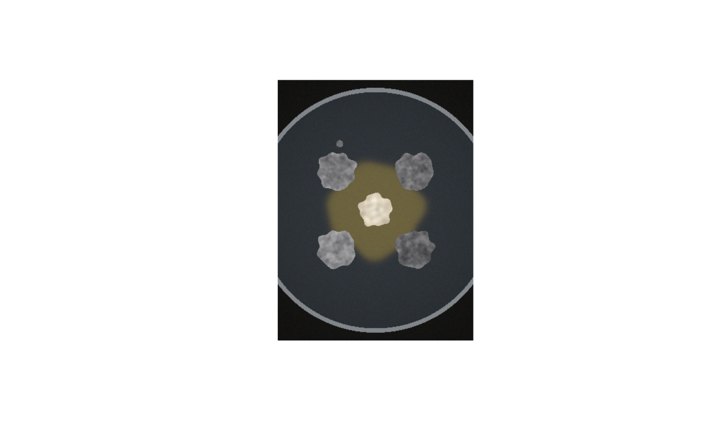

Generates schematic target colonies and central fungal growth with known image masks, colour and geometry. Tests include illumination gradients, texture, noise and irregular outlines. The synthetic central growth is not a mechanistic model of fungal development or interspecies interaction.
Usage
simulate_plate(
width = 900,
height = 1200,
dish_r_frac = 0.47,
dish_diameter_mm = 90,
layout = plate_layout(),
colony_radius_mm = 7,
colony_L = c(52, 46, 40, 58),
colony_ab = c(0.5, -1),
edge_lightening = 4,
facing_darkening = 0,
texture_sd = 5,
bacteria = NULL,
bacteria_radius_mm = 6,
hyphae_radius_mm = 17,
bacteria_lab = c(86, 0, 9),
hyphae_lab = c(42, -2, 22),
agar_lab = c(22, -1, -4),
background_lab = c(8, 0, 1),
satellite = TRUE,
vignetting = 0.25,
exposure = 1,
noise_sd = 0.012,
grey_card = FALSE,
seed = 1
)Arguments
- width, height
Image size (px).
- dish_r_frac
Dish outer radius as a fraction of the image height.
- dish_diameter_mm
Physical dish diameter (sets the true scale).
- layout
A
plate_layout()defining colony positions.- colony_radius_mm
Mean colony radius (mm), recycled per colony.
- colony_L
Mean \(L^*\) of each colony (the melanization truth; lower = darker), recycled.
- colony_ab
\(a^*, b^*\) of the colonies.
- edge_lightening
\(L^*\) units by which the outer 1.5 mm margin is lighter than the interior (age gradient).
- facing_darkening
\(L^*\) units by which the colony half facing the centre is darker (simulated localized melanization response).
- texture_sd
SD (\(L^*\)) of the wrinkle texture.
- bacteria
Legacy argument: include a central partner (default: from layout, including fungus). The simulated body and zone are schematic, not a mechanistic fungal-growth or inhibition model.
- bacteria_radius_mm, hyphae_radius_mm
Radii of the dense central core and peripheral growth extent.
- bacteria_lab, hyphae_lab
CIELAB of the dense central core and peripheral hyphal growth.
- agar_lab, background_lab
CIELAB of agar and photographic background.
- satellite
Add a small satellite colony next to the first colony.
- vignetting
Relative light fall-off at the dish edge (0 = none).
- exposure
Multiplicative exposure error in linear light.
- noise_sd
Gaussian sensor noise (sRGB units, 0-1).
- grey_card
Add an 18 % grey card (L* = 50) in the lower-left corner.
- seed
Random seed. The user's random-number stream is restored afterwards.
Value
A list with image (H x W x 3 sRGB array) and truth (dish
circle, mm_per_px, per-colony true area and mean \(L^*\) before
illumination effects, label matrix, bacteria and hyphae masks, grey-card
region).
Examples
sim <- simulate_plate(width = 300, height = 400, seed = 1)
show <- function(a) { plot(as.raster(a)) }
show(sim$image)

sim$truth$colonies
#> colony_id x y area_mm2 L_mean MI_mean
#> 1 TL 90.67877 140.6788 154.2355 52.95687 47.04313
#> 2 TR 210.32123 140.6788 154.4074 47.11511 52.88489
#> 3 BR 210.32123 260.3212 154.2355 42.20366 57.79634
#> 4 BL 90.67877 260.3212 154.5220 59.18494 40.81506